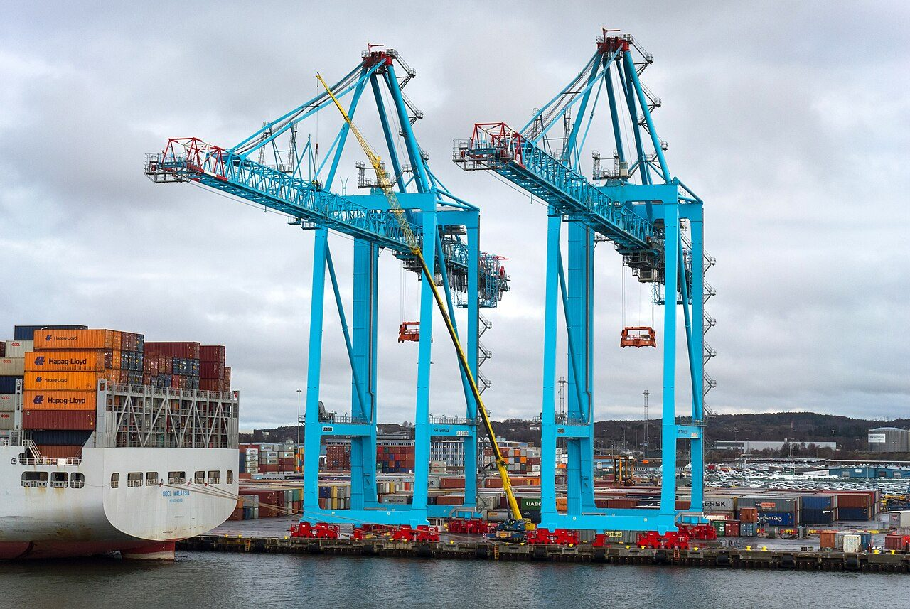
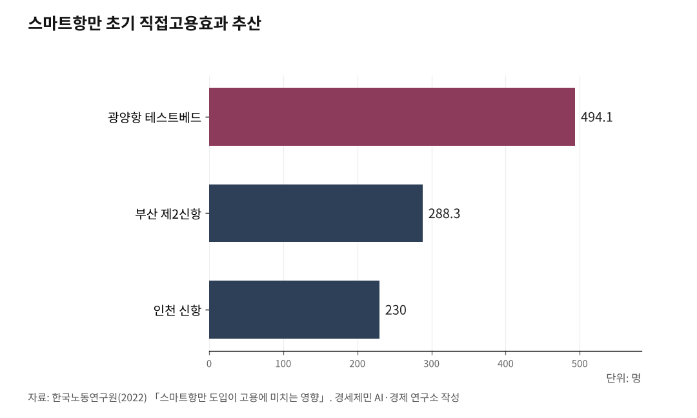

[인천해양산업, 생존기로㉑] 부산항 7부두 포트 4.0, 인천항도 피할 수 없다
부산 제2신항 직접고용 288명, 운반·현장 직무 줄고 IT·안전 직무 늘어
인천신항 1-2단계도 같은 길, 부산 협의 틀 부재 1년 사이 인천이 먼저 짤 자리
이재명 정부 인공지능국가전략위원회 출범 초기 8개 분과에 노동 분과는 없었다
부산항 신항 7부두가 2024년 4월 5일 개장했다. 4000TEU(20피트 표준 컨테이너 1개 기준 단위)급 3개 선석에 안벽 1050m, 부두 면적 83만7237㎡다. 화물의 하역·이송·적치 전 과정을 자동화 터미널운영시스템(TOS)이 제어한다. 운영사는 동원글로벌터미널부산(DGT)이다(부산일보, 2024.4.1). 한국노동연구원이 2022년 고용노동부 위탁으로 산출한 「스마트항만 도입이 고용에 미치는 영향」 보고서는 부산 제2신항 스마트항만의 초기 직접고용효과를 288.3명으로 추산했다(한국노동연구원, 2022). 항만 일자리는 자동화로 줄어든다. 인천신항 1-2단계도 같은 길로 들어섰다.

1. 포트 4.0(Port 4.0)이란
포트 4.0은 인더스트리 4.0(Industry 4.0, 4차 산업혁명)을 항만에 적용한 개념이다. 첨단 기술로 사업·영업·경영 핵심 절차를 디지털 전환하고, 보안을 개선하며, 운영 효율성과 항만 지속가능성을 높이는 항만을 말한다(B. Behdani, 2024).
자산 운영자에서 서비스 조정자로 항만 역할이 바뀌는 것이 핵심이다. 자동화, IoT(Internet of Things, 사물인터넷), AI(인공지능), 빅데이터, 블록체인 등 4차 산업혁명 기술이 항만 운영 전반에 적용된다.

2. 자동화에서 스마트화까지
포트 4.0을 이해하려면 기술이 어떻게 발전하고 융합되는지 알아야 한다.
자동화(Automation)는 기계가 사람의 반복 작업을 대체하는 것이다. 크레인 자동화, AGV(Automated Guided Vehicle, 무인운반차량) 도입이 대표적이다.
로봇화(Robotization)는 로봇이 하역, 검수, 운반 등 현장 작업 전반을 수행하는 단계다. 무인 야드 크레인이 여기에 해당한다.
항만 자동화의 역사는 로테르담에서 시작됐다. 1993년 6월 25일 로테르담 ECT(Europe Container Terminals, 유럽컨테이너터미널)의 델타/시랜드 터미널이 세계 최초로 자동화 컨테이너 터미널을 개장했다. AGV와 ASC(Automated Stacking Crane, 자동야드크레인)가 핵심 장비였다. 야드 내 컨테이너 이동을 무인화한 1세대 자동화다(ECT 공식 자료).
2015년 마스블락테 2(Maasvlakte 2) 구역이 개장하면서 2세대 자동화로 넘어갔다. APM 터미널(APM Terminals, 덴마크 머스크 그룹 계열 항만운영사) 마스블락테 II와 RWG(Rotterdam World Gateway) 터미널이 안벽 크레인(STS Crane, Ship-to-Shore Crane) 원격 제어를 상용화했다. APM 공식 자료는 "안벽 크레인 운전실에 운전자가 없는 완전 원격 제어"라고 적었다. 사람과 기계 작업 구역을 물리적으로 분리해 안전사고를 원천 차단했고, 모든 장비를 전기로 구동해 탄소 배출을 줄였다(APM Terminals 공식 자료).
스마트화(Smartization)는 자동화와 로봇화가 융합해 IoT, 빅데이터, 5G 기반으로 실시간 데이터를 수집·분석·최적화하는 것이다. 5G 원격 모니터링, 예측 정비가 사례다.
중국 칭다오항은 차이나유니콤(China Unicom, 중국 2위 이동통신사), 에릭슨(Ericsson, 스웨덴 통신장비 기업), ZPMC(상하이전화중공업, 중국 항만 장비 제조사)와 협력해 5G 스마트항만을 구축했다. 30대 이상의 고화질 카메라 데이터와 PLC(Programmable Logical Controller, 프로그램 가능 논리 제어기) 데이터가 5G로 전송된다. 관제 센터에서 자동 안벽 크레인을 원격 제어한다(Ericsson 공식 자료).
3. 스마트화가 AI를 만나면
스마트화된 항만이 AI를 만나면 단순히 데이터를 수집하는 단계를 넘어선다. AI가 스스로 판단하고 의사결정을 내리는 지능형 항만으로 진화한다.
로테르담항이 대표 사례다. 2018년 로테르담 항만청은 IBM과 항만 디지털화 협업에 착수했다. 2019년 hydro/meteo(수문·기상) IoT 애플리케이션이 운영에 들어갔다. 항만 안벽·계선주·도로·부표에 설치한 44개 센서가 조위, 유속, 염도, 풍속, 풍향, 시정 등 데이터를 실시간으로 수집한다. 수집된 데이터는 IBM 클라우드 기반 IoT 플랫폼으로 전송돼 AI 알고리즘이 분석한다. 디지털화 구간은 항만 전역 42km에 이른다(Port of Rotterdam 공식 자료).
AI는 선박 접안 가능 시간을 정밀하게 예측한다. 이 시스템으로 선박 대기 시간을 최대 1시간 단축한다. 선사 입장에서 약 8만달러(약 1억1000만원, 1달러=1390원, 2026.4.27 기준) 비용 절감 효과다(World Maritime News, IBM 협력 발표 인용).
크레인 동작 상태, 컨테이너 위치, 항내 교통 상황을 실시간 모니터링하고 장비 유지보수 시점까지 AI가 예측한다. 기존 주기적 점검 방식에서 벗어나 데이터 분석으로 유지보수가 필요한 정확한 시점을 예측해 점검 비용을 줄이고 항만 가동 중단 시간을 최소화한다.
4. AI에서 피지컬AI까지
AI(인공지능)는 데이터 분석, 패턴 인식, 의사결정 지원을 담당한다. 화물 흐름 예측, 장애 대응이 여기에 해당한다.
AGI(Artificial General Intelligence, 범용인공지능)는 특정 분야가 아닌 모든 상황에 범용 적용 가능한 인공지능이다. 아직은 이론적 단계에 머물러 있다.
피지컬AI(Physical AI, 로봇 등 실제 세계에서 작동하는 인공지능)는 AI가 물리적 세계를 인식·이해하고 로봇 등을 통해 실제 행동을 수행하는 기술이다.
엔비디아(NVIDIA, 미국 반도체 기업) 젠슨 황 CEO는 2025년 1월 CES 기조연설에서 "AI의 다음 개척 분야는 피지컬AI"라고 강조했다(NVIDIA 공식 블로그, 2025.1).
카운터포인트리서치 전망에 따르면 2030년까지 창고와 물류 분야가 휴머노이드(Humanoid, 인간형) 로봇 전체 설치 대수의 25%를 차지할 전망이다. 같은 리서치는 2025년 기준 전 세계 물류기업이 휴머노이드 로봇 약 2000대를 배치한 것으로 추정했다(카운터포인트리서치, 2025.1).
CJ대한통운은 국내 물류업계 최초로 경기 군포 풀필먼트센터에 AI 휴머노이드 로봇을 투입했다. 완충재 보충 작업으로 시범 운영하며 작업 데이터를 학습시켜 단계적 상용화를 준비하고 있다(CJ대한통운 공식 보도자료, 2025.9).
5. 일자리 재편과 정의로운 전환
부산항 7부두가 완전 자동 운영 체계로 전환하면서 주로 컨테이너를 옮기는 운반 장비가 무인으로 움직이게 됐다. 차량 운전 업무 일자리가 사라졌다. 야드 크레인 기사도 사라졌다.
대신 현장 탑승에서 원격 조종 일자리가 생겼다. 출입문 검수와 화물 확인은 영상 장비와 감지 장치가 맡는 비중이 커졌다.
한국노동연구원 2022년 보고서가 산출한 부산 제2신항 스마트항만 초기 직접고용효과는 288.3명이다. 하역장비 부문 95.25명, 현장 부문 103명, IT 인력 90명 구성이다(한국노동연구원, 2022, 표 5-15·5-16·5-17·5-18). 같은 보고서는 광양항 테스트베드 494.1명, 인천 신항 230명 초기 직접고용효과를 산출했다. 3개 항만 합계 1013명이다.
원격 조종실에서 장비를 다루는 조종 인력이 핵심이 됐다. 항만 운영 체계를 만드는 IT 개발 인력, 기능 안전 점검 인력, 정보 보안 인력 필요가 커졌다. 장비가 멈추거나 통신이 끊기면 물동량이 곧바로 막히는 만큼, 장애 대응과 예지 정비 역량이 비용과 직결되는 구조다.
다만 자동화 도입은 운반·현장 단순 직무를 줄이고 원격조종·IT·안전·지원 같은 직무를 만든다. 새 직무가 생겨도 기존 운반·현장 직무 감소 폭을 자동화가 그대로 메우지는 못한다는 것이 한국노동연구원 보고서 결론이다(한국노동연구원, 2022).
핵심은 정의로운 전환이다. 기술 변화로 일자리를 잃는 노동자가 새 직무로 옮길 통로를 만들어야 한다. 전환 교육, 자격 체계, 임금 체계를 한 묶음으로 짜야 한다.
현장 노동자가 새 직무로 옮길 통로가 막히면 자동화는 갈등만 키운다. 항만 공기업과 운영사가 고용 안전 장치를 먼저 내놓고 노사 협의를 시작해야 한다. 하청 구조에서 일하던 노동자까지 전환 대상에 넣는지도 관건이다.
한국이 비준한 ILO(International Labour Organization, 국제노동기구) 핵심협약 87호(결사의 자유 및 단결권 보호), 98호(단결권 및 단체교섭권 원칙의 적용), 29호(강제 또는 의무노동에 관한 협약)가 2022년 4월 20일 발효했다. 국내법과 동일한 효력을 갖는다(외교부, 2021.2.26 보도자료). ILO 결사의 자유위원회는 사내하청 노동자 파업에 대한 해고를 98호 협약 위반으로 판단해 왔다(매일노동뉴스, 2022.4.19). 항만 자동화로 일자리를 잃는 하청 노동자 보호는 한국이 비준한 98호 협약 정신에 직접 닿는 의제다.
6. 인천이 협의 틀 짤 1년이 남았다
인천신항 1-2단계도 같은 길로 들어섰다. 이경규 인천항만공사 사장은 2026년 신년사에서 7대 목표 가운데 두 번째로 'AI 기반 완전 자동화 항만 운영' 준비를 명시했다. "신항 1-2단계 컨테이너부두는 인천항 내일을 결정짓는 핵심 프로젝트다. 올해 하부공사 완공과 함께 상부공사 착수를 본격화해 AI 기반 완전 자동화 항만 운영을 위한 준비에 힘써야 한다"고 했다(헤럴드경제, 2026.1.5). 2025년 말 기준 하부공사가 99% 완료된 상태다.
부산항 7부두가 협의 틀 없이 개장한 1년 사이 인천에는 협의 틀을 짤 시간이 남았다. 17편에서 다룬 인천항공우주산학융합원이 인하대·인천시·인천국제공항공사 3자 협력 모델로 9년 만에 누적 사업비 1637억원·인력 58명·R&D 173건·일자리 1247명을 만들어 낸 사례가 있다(인천항공우주산학융합원 기관 소개, 2025). 인천 해양수산 산학연 거점 조성 타당성 검토 및 기본계획 수립 용역(2026.3)은 인천 소재 대학·인천시·인천항만공사 3자 협력 모델로 해양산학융합센터 설립을 제안했다(인하대학교 경기인천씨그랜트센터, 2026). 항만 자동화 협의체와 해양산학융합센터 전환 인력 양성 거점이 묶이면 인천이 한국 항만 자동화 정의로운 전환 표준을 만들 자리가 있다.
기하급수 속도로 발전하는 AI 기술 앞에 인간은 한없이 나약하다. 노동자와 일자리의 정의로운 전환이 시급하다.
이재명 정부가 인공지능국가전략위원회를 구성한 건 환영할 일이다. 다만 출범 초기 8개 분과(기술혁신·인프라, 과학·인재, 산업AX·생태계, 공공AX, 데이터, 사회, 국방·안보, 글로벌협력) 체계에서 노동 분과는 별도로 두지 않았다. 위원회는 2026년 3월 분과 확대 개편을 거쳤다(News1, 2026.3). 항만 자동화로 일자리를 잃는 노동자가 새 직무로 옮길 통로를 다루는 노동 분과 신설을 제안한다.
참고문헌
·한국노동연구원(2022), 『스마트항만 도입이 고용에 미치는 영향』, 고용노동부 고용영향평가사업 위탁보고서. https://www.kli.re.kr/eia/asmntRsltView.es?rslt_no=291
·"3개 ILO 핵심협약 비준동의안 국회 본회의 통과", 외교부 보도자료, 2021.2.26. https://www.mofa.go.kr/www/brd/m_4080/view.do?seq=370968
·인하대학교 경기인천씨그랜트센터(2026), 『인천 해양수산 산·학·연 거점 조성 타당성 및 기본계획 수립』, 인천광역시 발주.
·인천항공우주산학융합원(2025), 『기관 및 사업 소개 Ver.11.5』. https://www.iaaa.or.kr
·B. Behdani(2024), "Port 4.0: a conceptual model for smart port digitalization", Transportation Research Procedia, 2024.1.3. https://www.sciencedirect.com/science/article/pii/S2352146523004507
·"30 years ago ECT opened the very first automated terminal in the world!", Europe Container Terminals 공식 자료. https://www.ect.nl/en/news/fast-forward/30-years-ago-ect-opened-very-first-automated-terminal-world
·"The world's most advanced terminal", APM Terminals 공식 자료, 2017. https://www.apmterminals.com/en/news/news-releases/2017/news/the-worlds-most-advanced
·"Port of Rotterdam puts Internet of Things platform into operation", Port of Rotterdam 공식 자료. https://www.portofrotterdam.com/en/news-and-press-releases/port-rotterdam-puts-internet-things-platform-operation
·"Port of Rotterdam Authority case study", IBM 공식 자료. https://www.ibm.com/case-studies/port-of-rotterdam-authority
·"Port of Rotterdam teams up with IBM to build smart port of the future", World Maritime News, 2018. https://worldmaritimenews.com/archives/242383/
·"5G smart harbor at the Port of Qingdao", Ericsson 공식 자료, 2019. https://www.ericsson.com/en/cases/2019/5g-smart-harbor-at-the-port-of-qingdao
·"CES 2025: Jensen Huang on the next frontier of AI", NVIDIA 공식 블로그, 2025.1. https://blogs.nvidia.com/blog/ces-2025-jensen-huang/
·"피지컬 AI란 무엇인가요?", NVIDIA 용어집. https://www.nvidia.com/ko-kr/glossary/generative-physical-ai/
·"인공 일반 지능(AGI)란 무엇인가요?", AWS. https://aws.amazon.com/ko/what-is/artificial-general-intelligence/
·"휴머노이드 로봇의 상용화: 2030년 창고·물류 분야 25% 확대 전망", 카운터포인트리서치, 2025.1. https://counterpointresearch.com
·"CJ대한통운, 국내 물류업계 최초 AI 휴머노이드 현장 도입", CJ대한통운 공식 보도자료, 2025.9. https://www.cjlogistics.com/ko/newsroom/news/NR_00001285
·"국내 최초 완전자동화 컨테이너터미널 부산항 신항 7부두 개장", 부산항만공사 보도자료, 2024.4.5. https://www.busanpa.com
·"[신년사]이경규 인천항만공사 사장, '글로벌 초일류 스마트항만 도약'… 7가지 목표 추진", 헤럴드경제, 2026.1.5. https://biz.heraldcorp.com/article/10648931
·"[르포] 사무실서 수십만 평 항만 통제, 국내 첫 완전 자동화 부두", 부산일보, 2024.4.1. https://www.busan.com/view/busan/view.php?code=2024040118360974487
·"부산항 사람 없는 스마트 항만 구축 첫발", 한국경제, 2023.10.31. https://www.hankyung.com/article/2023103121471
·"국가인공지능전략위원회 분과 확대 개편", News1, 2026.3.
·"[ILO 기본협약 87·98·29호 발효] 국내법 효력 지닌 ILO 기본협약, 노동기본권 해석 달라진다", 매일노동뉴스, 2022.4.19. https://www.labortoday.co.kr/news/articleView.html?idxno=208468
※ 이 기사는 AI 프로그램 클로드를 활용해 작성했습니다.
사진 출처
· [대표사진] W.carter, "Container cranes at Skandiahamnen 1.jpg", 위키미디어 공용, CC0, https://commons.wikimedia.org/wiki/File:Container_cranes_at_Skandiahamnen_1.jpg
※ 이 기사는 인공지능을 활용해 작성했습니다.
관련기사
- [인천해양산업, 생존기로⑳] 70조원 선박 수리·개조 시장 열렸다, 인천은 거점 0개
- [인천해양산업, 기로⑩]한중열차페리,유럽 18일...중동우회
- 부산엔 스마트양식 1950억·어시장 2422억, 인천엔 데이터 거점도 없다
- [인천해양산업, 생존기로㉓] 인천항 크루즈 1월 64항차서 3월 133항차, 모항 도시 전환 갈림길
저작권자 © AI경세제민 무단전재 및 재배포, AI학습 및 활용 금지